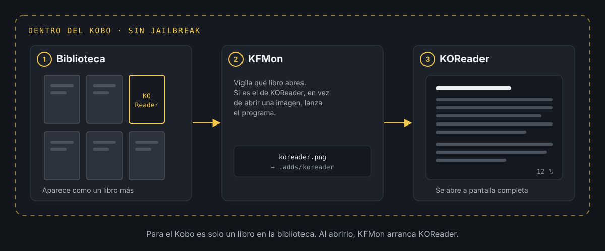

Cómo instalar KOReader en tu Kobo.
Hasta hace nada leía en un Kindle con jailbreak. Se lo hice por una sola razón: poder usar KOReader, el lector de libros que acabé prefiriendo a cualquier otro. Funcionaba, pero cada actualización de Amazon era una pequeña ruleta.
Ahora he estrenado un Kobo Libra Colour, y lo primero que hice fue instalarle KOReader. La sorpresa fue que aquí no hace falta jailbreak: Kobo lo permite sin más.
Con este artículo empiezo una serie sobre ereaders, KOReader y las cosas que mejoran la lectura en casa, sobre todo si tienes un servidor siempre encendido. Pero lo primero es lo primero: tener KOReader funcionando en el Kobo.
El dilema
El lector que trae el Kobo de fábrica está bien para leer novelas compradas en su tienda. En cuanto quieres algo más, se queda corto: ajustes de tipografía limitados, poco control sobre PDF y cómics, estadísticas muy básicas y ninguna forma de ampliarlo.
KOReader es justo lo contrario. Es un lector libre que se ajusta hasta el último margen, se lleva bien con casi cualquier formato y admite plugins que le añaden de todo. El problema es que en muchos ereaders instalarlo significa pelearse con el sistema.
En el Kindle eso pasa por el jailbreak: depender de que alguien encuentre un fallo en la versión del sistema que tienes, aplicarlo con cuidado y cruzar los dedos para que la siguiente actualización no lo deshaga. Se puede vivir así, pero no es cómodo.
El término medio
En el Kobo no hay que romper nada. El sistema deja que copies programas en una carpeta oculta, .adds, y un pequeño lanzador, KFMon, se encarga de abrirlos.
Todo viene en un único paquete, el "one-click" que mantiene NiLuJe, uno de los desarrolladores de KOReader y autor de KFMon, en el foro de MobileRead: KOReader y KFMon juntos, listos para copiar al Kobo por USB. No se toca el sistema de Kobo, que sigue funcionando igual que antes. KOReader se añade a su lado.
Cómo se abre KOReader

La gracia está en cómo se abre. Tras instalarlo, en la biblioteca aparece un "libro" más, con el icono de KOReader de portada. KFMon vigila qué abres, y cuando tocas ese libro, en lugar de abrir una imagen arranca KOReader a pantalla completa. Para el Kobo es solo un libro más.
Instalarlo paso a paso
Lo primero es descargar el paquete del hilo de NiLuJe en MobileRead. Se llama OCP-KOReader-vAAAA.MM.zip, con la versión en el nombre. Yo usé OCP-KOReader-v2026.03.zip.
Después conecta el Kobo al ordenador por USB. Aparece como una unidad más, llamada KOBOeReader.
A partir de ahí hay dos formas de instalarlo.
Descomprimiendo a mano. Extrae el zip directamente en la raíz de la unidad del Kobo, no en una subcarpeta. Ojo con Extraer todo de Windows, que propone como destino una carpeta nueva con el nombre del zip: hay que cambiarlo por la raíz del Kobo, o la instalación no funcionará.
Con el script de instalación (el que usé yo). En el mismo hilo, en el segundo mensaje, hay un script para Windows, otro para macOS y otro para Linux. Se descarga en la misma carpeta que el zip y se ejecuta. En Windows es install.ps1, que se lanza con clic derecho y Ejecutar con PowerShell. El script encuentra el Kobo y el paquete y hace el resto.
Si Windows se niega a ejecutarlo porque el script no está firmado, desbloquéalo antes desde PowerShell, en la carpeta donde lo descargaste:
Unblock-File .\install.ps1Con cualquiera de los dos métodos, en la unidad del Kobo debería quedar algo así:
KOBOeReader/├── .adds/│ ├── kfmon/│ └── koreader/├── .kobo/└── koreader.pngkoreader.png es el "libro" que aparecerá en la biblioteca, y .adds/koreader es donde vive KOReader con sus ajustes y plugins.
Por último, expulsa el Kobo de forma segura desde el ordenador. Al desconectarlo, el Kobo procesa la instalación y se reinicia solo. Cuando vuelva, busca en la biblioteca el libro con el icono de KOReader y ábrelo. Si ves la pantalla de KOReader, ya está.
Plugins que le he puesto
Una de las razones para usar KOReader son los plugins. Todos se instalan igual: se descarga el zip de la última versión desde su página de GitHub, se extrae la carpeta que termina en .koplugin en .adds/koreader/plugins/ y se reinicia KOReader.
Los dos primeros los considero imprescindibles en un Kobo. Los otros dos son opcionales, pero a mí me han hecho la vida más fácil. Con los cuatro, la carpeta queda así:
.adds/koreader/├── patches/│ └── 2-....lua (los de kobo-patches.zip)└── plugins/ ├── kobo.koplugin/ ├── simpleui.koplugin/ ├── localsend.koplugin/ └── dogearmanager.koplugin/kobo.koplugin: lo que le falta a KOReader en un Kobo
kobo.koplugin hace de puente entre KOReader y el sistema de Kobo. Añade una biblioteca virtual para abrir desde KOReader los libros comprados en la tienda de Kobo y sincronizar el estado de lectura con ella. Y, sobre todo, añade el Bluetooth, que es lo que hace falta para usar el mando de Kobo (eso lo cuento en otro artículo).
Este se instala un poco distinto. De la página de la versión hay que descargar dos ficheros:
kobo.koplugin.zip: su carpeta va a.adds/koreader/plugins/, como los demás.kobo-patches.zip: los ficheros que empiezan por2-y terminan en.luavan a.adds/koreader/patches/. Si la carpetapatchesno existe, créala.
Para comprobar que ha funcionado, abre KOReader y entra en Ajustes → Red. Debería aparecer un apartado nuevo, Bluetooth.
SimpleUI: una pantalla de inicio de verdad
SimpleUI es, para mí, el mejor de todos. Añade una pantalla de inicio con el libro que estás leyendo y accesos directos, mucho más agradable que el explorador de ficheros con el que arranca KOReader.
Se activa y se configura desde Herramientas → SimpleUI. Entre sus opciones está la de que KOReader arranque directamente en esa pantalla, que es lo primero que activé.
LocalSend: libros por wifi, sin cables (opcional)
LocalSend para KOReader permite recibir libros y otros ficheros desde el móvil o el ordenador con la aplicación LocalSend, y también enviarlos desde el lector. Es la forma más cómoda que he encontrado de pasar un libro al Kobo sin sacar el cable.
Cada versión trae un zip por arquitectura. Para el Libra Colour es el de arm64, pero conviene mirar lo que diga la página de la versión, porque la recomendación ha ido cambiando.
Una vez instalado, aparece en el menú de Red como LocalSend. Ahí eliges la carpeta donde se guardan los ficheros y el nombre del dispositivo, y pulsas Start server. Si activas Start with KOReader, el servidor arranca solo cada vez que abres KOReader.
Dogear Manager: el marcador a tu gusto (opcional)
Dogear Manager cambia el icono de la esquina que marca una página, la "oreja" del libro, desde el propio menú y sin editar ficheros. Necesita KOReader v2025.10 o superior.
Con un libro abierto, en Herramientas → Dogear Manager puedes elegir el diseño, ajustar el tamaño (de 0.5x a 4.0x) y los márgenes, o volver al original. Si quieres usar diseños propios, ponlos en .adds/koreader/icons/dogears/ y así no se pierden al actualizar el plugin.
Cosas a tener en cuenta
Las actualizaciones de Kobo desactivan el lanzador. Cuando el Kobo instala una versión nueva de su sistema, KFMon deja de funcionar y el libro de KOReader se abre como una simple imagen. No se pierde nada: basta con volver a instalar el mismo paquete (o uno más nuevo) como la primera vez. Antes de hacerlo, guarda una copia de la carpeta .adds/koreader, por si acaso.
Los plugins son de terceros. Cada uno lo mantiene una persona distinta, a su ritmo. Antes de instalar o actualizar uno, merece la pena mirar en su página para qué versión de KOReader está pensado.
El Kobo sigue siendo un Kobo. KOReader no sustituye al lector de fábrica, convive con él. Puedes seguir usando la tienda, las sincronizaciones y todo lo demás como siempre, y abrir KOReader solo cuando lo quieras.
Por qué me convence
Después de años con el Kindle, lo que más valoro es la tranquilidad. No dependo de que nadie encuentre un fallo en el sistema para poder usar el lector que quiero, y si una actualización me desactiva el lanzador, se arregla en dos minutos con el mismo paquete de siempre.
Además, KOReader en el Kobo es el mismo KOReader de siempre, con mis ajustes, mis gestos y mis plugins. Cambiar de aparato no ha sido empezar de cero.
Esto es solo el principio. En los próximos artículos de la serie iré contando cómo lo tengo configurado y cómo encaja con el resto de cosas que tengo montadas en casa. Si has llegado hasta aquí con un Kobo en la mano, espero que te haya resultado útil.